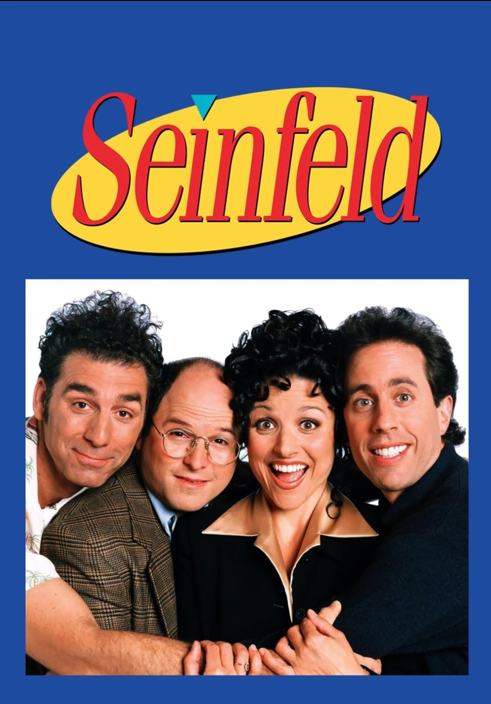
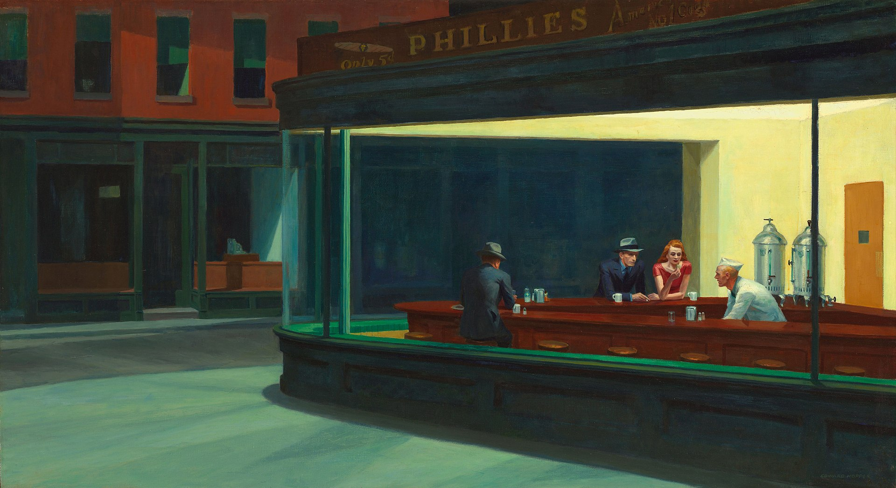
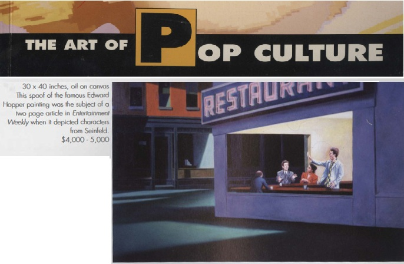

Exhibitions
The Art of Pop Culture, Pacific Design Center, Los Angeles, California, US, January 1998.
Literature
The Art of Pop Culture (Los Angeles: Guernsey’s, Pacific Design Center, January 1998), auction catalogue.
Ron English, Popaganda: The Art & Subversion of Ron English (San Francisco: Last Gasp, 2001), p. 90. ISBN 1-887128-60-3.
Notes
This work references the television series Seinfeld.
This work references Edward Hopper’s Nighthawks.
This work appears in the auction catalogue for The Art of Pop Culture, Guernsey’s, Pacific Design Center, Los Angeles, January 1998.
Ancillary Documentation
The following materials document the Seinfeld and Edward Hopper source references, as well as auction-catalogue documentation associated with the work.


